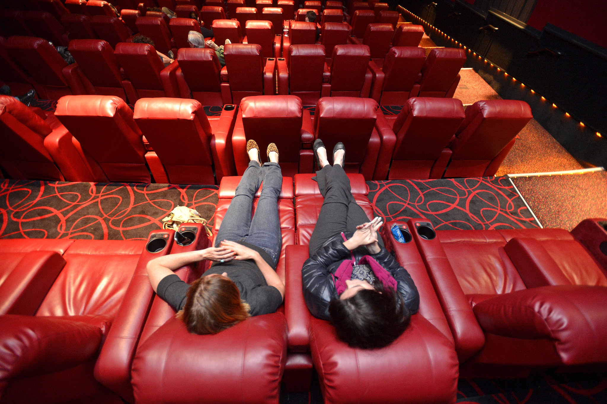

Local Lexington Theatre


The Local Lexington Theatre has been serving the Lexington area for 50+ years and counting! In 1972, the theatre was founded in downtown Lexington by Liam Stewart with only one screen, over the years we have expanded LLT to 12 full theater rooms with heated leather recliners, 2 of them because IMAX! Our goal is to provide Lexington the best moviegoing experience at the best prices, whilst also contributing to the local community with fundraisers and events.
Some of the films we play are blockbuster hits such as Marvel movies, though don't expect us not to play classics or independent films!
Our concession stands include nachos with cheese/salsa, chips, hot dogs, slices of pizza, and of course, buttery popcorn!
Join us in downtown Lexington at 123 Main. St!